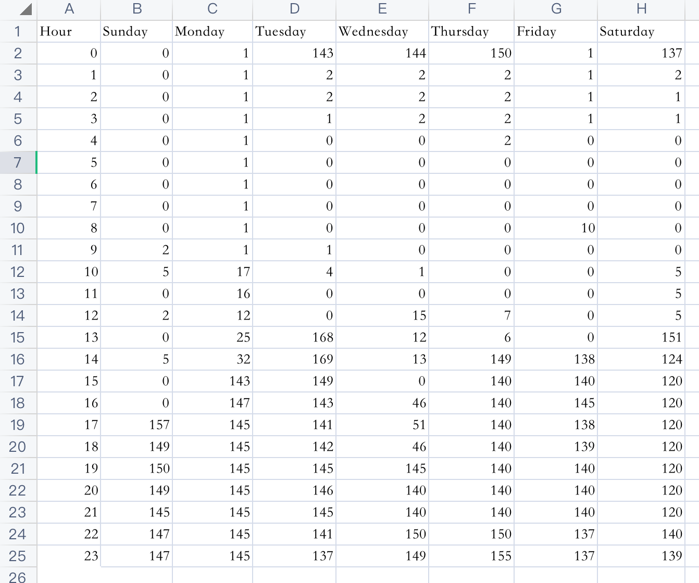

My Data Portrait
Description
There are seven columns, which represent 7 days in one week, Sunday to Saturday. And on the left side is the exact time span in hour unit, from 0 o’clock to 23 o’clock. The ball jump from the top represents the light condition at that time.
共有7列，分别代表一周中从星期日到星期六的7天。左侧是以小时为单位的确切时间跨度，从0点到23点。从顶部跳出的球代表当时的光照状态。
If the light volume is 0, it means that the room is totally dark and I am still sleeping.
如果光量为0，则表示房间完全黑暗，我仍在睡觉。
If the light volume is around 140 lux, it means that I have already get up and turn on my light.
如果光量约为140 lux，则意味着我已经起床并打开灯。
If the light volume is bigger than 0, but still very low, it refers to the moonlight or sunlight cast from curtains.
如果光量大于0，但仍然很低，则表示月光或日光透过窗帘投射进来。
Data Resources
From my selective course in Tsinghua, Healthy Architecture, I get a device which can be used to record some parameters of the space in real time. I choose the light volume, because I can speculate my routine in reverse.
从我在清华的选修课程《健康建筑》中，我得到了一种可用于实时记录空间某些参数的设备。 我选择光量，因为我可以反过来推测我的日常活动。
